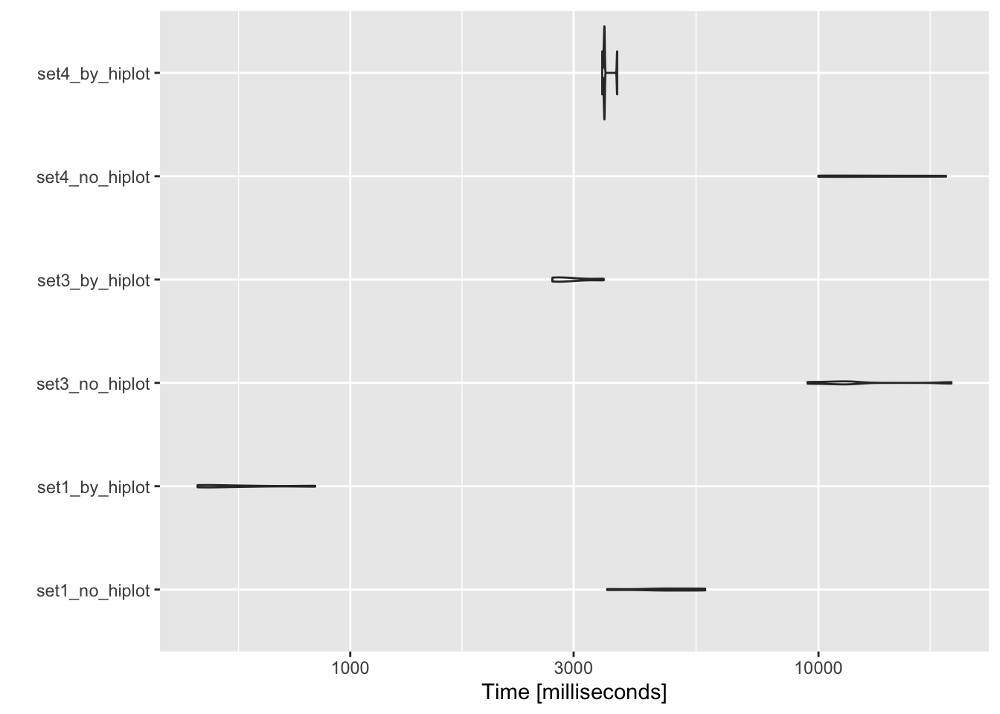

Hiplot Xena 镜像与官方网站下载速度测评
王诗翔 · 2020-12-14
最近剑峰在 Hiplot 服务器上线了 UCSC Xena 的镜像，本文是对已部署镜像的下载速度情况进行一个简单的测评。
数据集选择
使用更新到 1.4.0 的 UCSCXenaTools https://github.com/ropensci/UCSCXenaTools。
library(UCSCXenaTools)
#> =========================================================================================
#> UCSCXenaTools version 1.4.0
#> Project URL: https://github.com/ropensci/UCSCXenaTools
#> Usages: https://cran.r-project.org/web/packages/UCSCXenaTools/vignettes/USCSXenaTools.html
#>
#> If you use it in published research, please cite:
#> Wang et al., (2019). The UCSCXenaTools R package: a toolkit for accessing genomics data
#> from UCSC Xena platform, from cancer multi-omics to single-cell RNA-seq.
#> Journal of Open Source Software, 4(40), 1627, https://doi.org/10.21105/joss.01627
#> =========================================================================================
#> --Enjoy it--看下数据类型：
table(XenaData$Type)
#>
#> clinicalMatrix genomicMatrix genomicSegment mutationVector
#> 349 975 152 203这里随机每种数据类型选 1 个数据集。
set.seed(1234)
set1 <- sample(which(XenaData$Type == "clinicalMatrix"), 1)
set.seed(1234)
set2 <- sample(which(XenaData$Type == "genomicMatrix"), 1)
set.seed(1234)
set3 <- sample(which(XenaData$Type == "genomicSegment"), 1)
set.seed(1234)
set4 <- sample(which(XenaData$Type == "mutationVector"), 1)
set1 <- XenaData[set1, ]
set2 <- XenaData[set2, ]
set3 <- XenaData[set3, ]
set4 <- XenaData[set4, ]我们看看随机挑出来了哪些数据集，如果太大了就不下载了。。。
set1
#> # A tibble: 1 x 17
#> XenaHosts XenaHostNames XenaCohorts XenaDatasets SampleCount DataSubtype Label
#> <chr> <chr> <chr> <chr> <int> <chr> <chr>
#> 1 https://… pcawgHub PCAWG (spe… pcawg_speci… 3205 phenotype tumo…
#> # … with 10 more variables: Type <chr>, AnatomicalOrigin <chr>,
#> # SampleType <chr>, Tags <chr>, ProbeMap <chr>, LongTitle <chr>,
#> # Citation <chr>, Version <chr>, Unit <chr>, Platform <chr>
set2
#> # A tibble: 1 x 17
#> XenaHosts XenaHostNames XenaCohorts XenaDatasets SampleCount DataSubtype Label
#> <chr> <chr> <chr> <chr> <int> <chr> <chr>
#> 1 https://… tcgaHub TCGA Pheoc… TCGA.PCPG.s… 187 DNA methyl… Meth…
#> # … with 10 more variables: Type <chr>, AnatomicalOrigin <chr>,
#> # SampleType <chr>, Tags <chr>, ProbeMap <chr>, LongTitle <chr>,
#> # Citation <chr>, Version <chr>, Unit <chr>, Platform <chr>
set3
#> # A tibble: 1 x 17
#> XenaHosts XenaHostNames XenaCohorts XenaDatasets SampleCount DataSubtype Label
#> <chr> <chr> <chr> <chr> <int> <chr> <chr>
#> 1 https://… tcgaHub TCGA Prost… TCGA.PRAD.s… 495 copy numbe… Befo…
#> # … with 10 more variables: Type <chr>, AnatomicalOrigin <chr>,
#> # SampleType <chr>, Tags <chr>, ProbeMap <chr>, LongTitle <chr>,
#> # Citation <chr>, Version <chr>, Unit <chr>, Platform <chr>
set4
#> # A tibble: 1 x 17
#> XenaHosts XenaHostNames XenaCohorts XenaDatasets SampleCount DataSubtype Label
#> <chr> <chr> <chr> <chr> <int> <chr> <chr>
#> 1 https://… tcgaHub TCGA Lung … mc3/LUSC_mc… 480 somatic mu… MC3 …
#> # … with 10 more variables: Type <chr>, AnatomicalOrigin <chr>,
#> # SampleType <chr>, Tags <chr>, ProbeMap <chr>, LongTitle <chr>,
#> # Citation <chr>, Version <chr>, Unit <chr>, Platform <chr>set2 的数据集比较大，我们去掉它。有兴趣的可以单独测试。
下载测试
library(microbenchmark)先编写一个下载函数：
download_test <- function(x, use_hiplot = FALSE) {
if (use_hiplot) {
options(use_hiplot = TRUE)
on.exit(options(use_hiplot = FALSE))
} else {
options(use_hiplot = FALSE)
}
x %>%
XenaGenerate() %>%
XenaQuery() %>%
XenaDownload(force = TRUE)
}我们下载看一看，下载重复 5 次，看下平均水平：
options(use_hiplot = TRUE)
download_stats <- microbenchmark(
set1_no_hiplot = download_test(set1),
set1_by_hiplot = download_test(set1, use_hiplot = TRUE),
set3_no_hiplot = download_test(set3),
set3_by_hiplot = download_test(set3, use_hiplot = TRUE),
set4_no_hiplot = download_test(set4),
set4_by_hiplot = download_test(set4, use_hiplot = TRUE),
times = 5
)结果可视化
print(ggplot2::autoplot(download_stats))
#> Coordinate system already present. Adding new coordinate system, which will replace the existing one.
数据值：
print(download_stats)
#> Unit: milliseconds
#> expr min lq mean median uq max neval cld
#> set1_no_hiplot 3537 4523 4780 4708 5406 5729 5 a
#> set1_by_hiplot 472 495 584 506 604 842 5 a
#> set3_no_hiplot 9478 10504 12471 11354 11789 19229 5 b
#> set3_by_hiplot 2703 2744 2967 2857 3053 3478 5 a
#> set4_no_hiplot 9998 10469 13398 12136 15663 18725 5 b
#> set4_by_hiplot 3453 3479 3526 3490 3491 3716 5 a本次测试通过位于上海的学校网络完成。由于网络、地理坐标的原因，读者使用的实际下载速度可能有所不同。